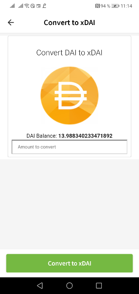
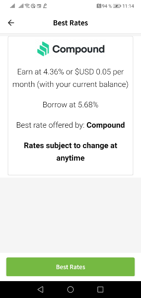
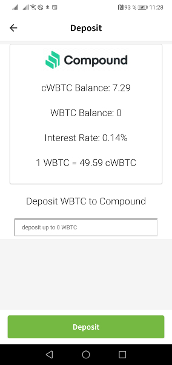
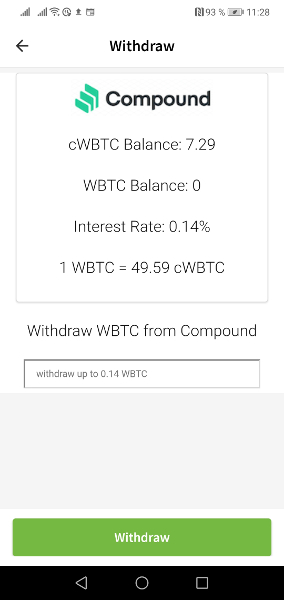

TokenScript examples in AlphaWallet
Meet the TokenScripts AlphaWallet implemented to improve the user experience for popular token.
The AlphaWallet team created TokenScripts for several popular token which tremendously improve the user experience. To try it, just import a wallet holding these coins in AlphaWallet or send them to a fresh AlphaWallet account.
DAI
If you don't know DAI, you missed something. DAI is a Dollar token on Ethereum, which is not centrally backed by a bank account holding a Dollar equivalent, but by a DAO holding and trading a reserve in Ether and other token. It's one of the prime examples of the power of smart contracts.
AlphaWallet's TokenScript implementation adds two functionality to the user interface of your DAI Dollar. Select your DAI Dollar and tap on the […] button on the buttom on the right side to see the options.

- You can convert mainchain DAI to xDai and vice versa. xDai is a sidechain which allows cheap transactions. Thanks to TokenScript AlphaWallet contains a powerful xDai bridge straight in your wallet to support scaling Ethereum.
- Get your best rates to lend DAI. One of the practical differences between Dollar in your bank account and DAI Dollar is that you can use smart contracts to get an interest on your DAI. AlphaWallet supports this by displaying the best DeFi rates for DAI Dollar.
These features where mostly created for demonstration purposes. They can be broadly extended: You could bridge DAI to the OMG blockchain or to the Raiden network, create the transactions required to lend it for an interest, allow to borrow more DAI or to pay back a DAI loan and withdraw your collateral and much more. Token are more than just surrogates for money and value - they add functionality to values. A smart wallet needs to know these functionalities and integrate them in the user experience.
Basically, any smart contract author can implement his Smart Contract for DAI dollar as an Action Card in the DAI TokenScript, which is currently maintained by the TokenScript team. After reviewing your pull request in the example folder it can become part of AlphaWallet.
Compound, AAVE and other DeFi
Maybe you heard about Decentralized Finance (DeFi). It is the technology to use smart contracts and token to decentralize not just money but also traditional financial services like lending, borrowing or exchanging.
However, a wallet doesn't know a DeFi app until the wallet authors manually integrated the logic of its smart contracts. For AlphaWallet we did this too - but as an author of a DeFi app you can do it yourself and submit it to our TokenScript repository for implementation in AlphaWallet. We created an open source infrastructure for this.
Take Compound for example. To participate in the money market smart contract you need to transform token like DAI or WBTC into cDai or cWBTC. A normal wallet doesn't know much about these token and is unable to craft the transactions required to lend, borrow, deposit or redeem them. AlphaWallet uses a Compound TokenScript to allow you to deposit cWBTC, to withdraw them and to even see the interest rate as well as the conversion rate of cWBTC and WBTC.

A similar TokenScript exists for AAVE's aDAI token, for UniSwap or DDEX. While being very rudimentary, these TokenScripts already improve the DeFi user experience of AlphaWallet users tremendously.
If you are interested in AlphaWallet or TokenScript or have authored a DeFi token, you are invited to learn the basics of TokenScript, scan through our examples and contribute to existing TokenScripts or create new ones.